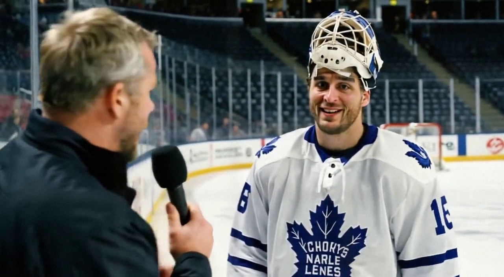

Aebischer makes the quiet night his own in Toronto's 11th straight
The shutout came on a night of just 13 shots against, and Aebischer says the gaps between them were the hard part
 Jan KowalczykRinkside reporter and studio host · The Tunnel
Jan KowalczykRinkside reporter and studio host · The Tunnel
2:43 · synthetic picture and voices, produced from the record
2:46 · synthetic voices, produced from the record · download
 David Aebischer84 stopped all 13 shots he faced as
David Aebischer84 stopped all 13 shots he faced as  Toronto Maple Leafs won 4-0 on the road at
Toronto Maple Leafs won 4-0 on the road at  New York Islanders on Monday night, extending the league's longest streak to 11 straight. The shutout is his first of the season, and it came on a night both teams managed just 27 combined shots, the fewest in the league this month. Aebischer, 26, is now 10 and 3 with one tie this season in 14 games.
New York Islanders on Monday night, extending the league's longest streak to 11 straight. The shutout is his first of the season, and it came on a night both teams managed just 27 combined shots, the fewest in the league this month. Aebischer, 26, is now 10 and 3 with one tie this season in 14 games.
Transcript
Jan Kowalczyk here in the tunnel at Uniondale. David, thirteen shots against, fourteen for your side. Twenty-seven in a hockey game. How did that come about?
Well. The special teams, I think. We had, uh, two penalties in the first period and they had, maybe three. So there were a lot of stops, a lot of faceoffs. You are out there, you wait, you wait, and then someone shoots. That is the difficult part. You must be ready for the one shot that comes after two minutes of nothing.
Was there a moment on the penalty kill tonight where you thought, we're going to give one up?
Yes. The second period, there was a shot from the point that, uh, Klesla blocked in front of me. I did not see it. I heard it hit and I thought, okay, that was close. And then there was a rebound in the crease and I covered it. That was the, the moment I think. After that the boys were bigger in front of me and it became easier.
You're up four nothing going into the third. Walk me through the mental side. The game is over, everyone can see it. How do you not drift?
It is the question, yes. If you think the game is over, it is not over. There is always one shot. The boys, they keep working, they block, they clear, so I cannot just, what do you say, take a walk in the net. I must watch the puck every shift. And the crowd goes quiet, and you hear the bench more, you hear the calls. That keeps you in it.
First shutout of the season. Ten wins in fourteen. You're sitting second in the league in goals against. Does it feel like a different season than last year?
I do not look at that, the goals against. But yes, the wins, that is different. Last year was, uh, fifteen and thirteen and no shutouts. That is a strange number to have on your card. This year I have the shutout tonight, I have ten. That is, it is better. But the season is long and I know, I know that consistency, that is the thing I must, must keep.
You're up six on the Development Index tonight, sitting well above your base. Do you feel that, the step up?
I feel that I am, uh, playing more, and when you play more you are sharper. In Fribourg my coach used to say, the goalie who sits, he rusts faster than the goalie who plays. So maybe that is it. I play, I am ready, I make the save. The Index, I do not look at it. I know the word consistency, though. I know it is what people say about me.
Eleven straight. What is the room like on the bus back?
It is quiet, actually. People sleep. You are tired after a game like this, even when you only face thirteen shots. The head is not the same as the body. We will sleep and tomorrow we practice again.
David Aebischer, shutout number one, eleven straight. Thank you, back to you.